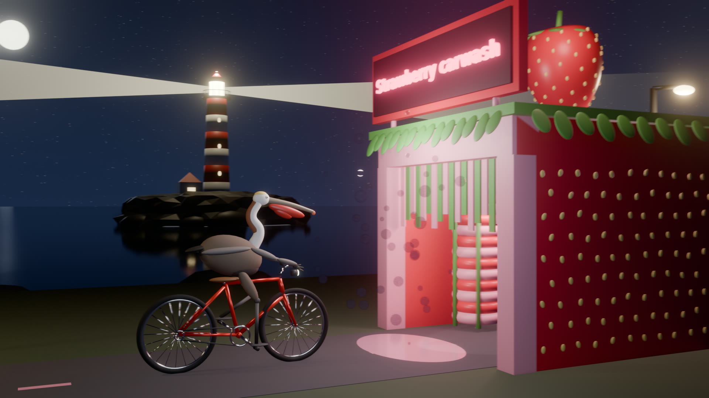

- 12 s · 288 frames · 24 fps
- 1920 × 1080
- Blender 5.0.1 · EEVEE
- Every object built from Python, no downloaded assets · source
A pelican rides to the Strawberry carwash
Two AI drawing benchmarks in one scene: Simon Willison's pelican riding a bicycle and OpenRouter's lighthouse at night, with a strawberry-themed car wash added. The pedalling follows the road speed and the lighthouse beam turns once every 4 seconds.
Benchmark prompt
Make an animated 3D scene of a pelican riding a bicycle up to a car wash with a sign that says “Strawberry carwash”. It is night, and a lighthouse on a rock sweeps its beam in the background. Build everything yourself: no downloaded models, textures or images.
What to look for when comparing results:
- The pelican is recognisable: long bill, throat pouch, and its feet on the pedals.
- The bicycle has two wheels, a frame that joins up, and a chain drive.
- The sign text is spelled exactly and can be read.
- The night scene stacks in the right order: sky, sea, rock, tower, lantern.
- It moves: wheels and pedals turn, and the beam sweeps.
